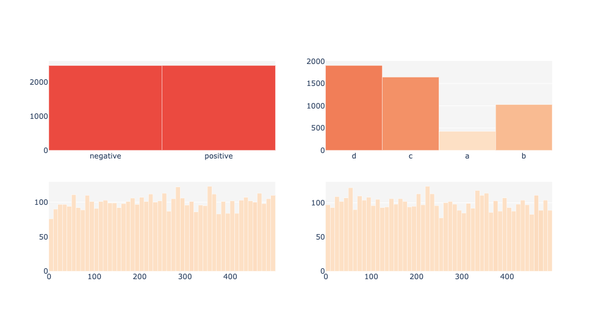

Label Stats
Wordview provides several statistics for labels in labeled datasets.
To use this feature, you can use LabelStatsPlots.
Document-level Labels
For document-level labels Wordview supports up to 4 independent
categorical or numerical labels. These labels should be provided in a
one-label-per-document fashion. See the following example where such
labels are provided in a pandas.dataframe.
from wordview.text_analysis import LabelStatsPlots
# In addition to the original label which is located in the column `label`, of the dataframe,
# for illustration purpose, let's create two random labels:
imdb_train['numerical_label'] = np.random.randint(1, 500, imdb_train.shape[0])
imdb_train['new_label'] = random.choices(['a', 'b', 'c', 'd'], [0.2, 0.5, 0.8, 0.9], k=imdb_train.shape[0])
imdb_train['numerical_labe2'] = np.random.randint(1, 500, imdb_train.shape[0])
lsp = LabelStatsPlots(df=imdb_train, label_columns=[('label', 'categorical'),
('label2', 'categorical'),
('numerical_label', 'numerical'),
('numerical_label2', 'numerical')
])
lsp.show_label_plots()

Sequence-level Labels
One of the most widely used types of labels in NLP are sequence-level labels (e.g. Named Entity tags such as PER, LOC). Wordview offers functions to see the overall and document-level distribution of sequence labels.